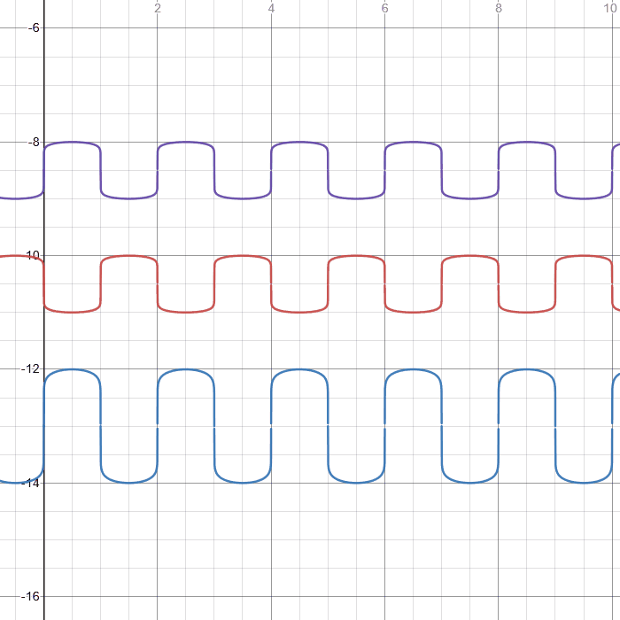

Summer 2023 (Not quite finished)
The QCW tesla coil is a further development of the DRSSTC (dual resonant solid state tesla coil). Visually, it usually has a shorter and wider secondary coil compared to a regular SSTC or DRSSTC. They also typically make straighter and longer arcs than DRSSTCs. Some QCW coils are known to make sparks over ten times the length of their secondary coil.
Some technical characteristics are that they typically have higher coupling than a DRSSTC, with k being usually greater than 0.4-0.5, rather than the 0.2 and 0.3-ish for DRSSTCs and regular SSTCs. In addition, QCW coils often run at relatively high frequencies, usually over 400 kHz. They also usually have lower maximum primary current, which allows for probably the biggest difference: QCW tesla coils run in much longer, ramped pulses of power. Where a DRSSTC might run in 100µs pulses, a QCW gradually ramps up its output over 10-20ms. According to forum posts and other internet sources, this ramped power cycle, in combination with a high operating frequency allows the arc to grow much longer than those from a DRSSTC.
Ramping the power
This ramped power cycle is typically achieved in a few different ways. A popular approach is to simply use a (very beefy) buck converter to ramp the inverter supply voltage. This method is relatively simple, and has been shown to work very well. A microcontroller controls a large MOSFET or IGBT, which basically PWMs a rectified-mains power supply, and then this is fed into an LC filter that outputs a relatively smooth, variable DC voltage. This can then be used to power the inverter.
The other method is to phase shift the drive signals for the inverter (this only works for full H bridge inverters). Essentially, in a normal full bridge, the left and right halves get signals which are out of phase by 180 degrees, but when modulating the power using phase shifting, this 180 degree phase shift can be modulated to vary the power going to the primary LC circuit. An advantage of this over changing the pulse width of each half of the H bridge, according to my understanding, is that it allows half the H bridge to still switch during a current zero crossing, which reduces strain on the transistors.
In the gif below, the top two lines represent the halves of the H bridge, and the bottom represents the output voltage.

In this case, the middle line is the one being phase shifted. This half of the H bridge will be "hard switching", and will heat up much more. This can be a problem, and one method to solve this is to alternate the side that gets phase shifted. In some drivers such as the Simpledriver 2.3, the side which gets phase shifted can be set to alternate between every long pulse, or between every oscillation cycle. In my driver design, (which is partly based on the Simpledriver), I chose the latter.
On a side note, it seems that the Simpledriver's schematic link has gone down, but it can still be found on the wayback machine here.
The (slightly cursed) waveforms for this are shown below.
This is essentially the same thing as before, but the two top lines are swapped every cycle.
Implementing the phase shifter
In the Simpledriver, an FPGA + analog approach is used to variably phase shift the input signal. While this method certainly can work well, I thought that an easier way would be to just use the RP2040 microcontroller's PIO unit. My reasoning was that an RP2040 is much cheaper than an FPGA that could be used for this ($7.65 CAD for the XC9536, compared to $1.06 for the RP2040). I also thought that it could be more straightforward to design. (Also because I am already kind of familiar with the RP2040).
The RP2040 has two separate PIO peripherals, each consisting of a shared program memory (which holds a maximum of 32 instructions), and four state machines which can independantly run the shared program. There are only nine different instructions that the state machines can run, but this is sufficient for what I am doing.
The phase shift program essentially waits for an input state change, and then sets a counter which increments up to a certain value, which determines the amount of phase shift. After it reaches this value, it switches the output pin state. In addition, each time it counts, it makes sure that the input pin state has not switched a second time before it has finished counting. If it detects this, it immediately switches the output state. This is to ensure that it does not fall out of sync with the input, since that will almost certainly cause the tesla coil to catastrophically fail.
I also made another program to alternate the phase shift pins every cycle in PIO. The RP2040 has two PIO blocks, but I wanted to reserve one of them for the fiber optic IO, to control the driver. So I had two different programs that needed to be run from only one program memory bank.
A solution to this problem was to literally just put both programs into the same memory, but to ensure that they each had an unconditional jump to their starting points. The state machines can be set to start their program counters at a certain offset, so different state machines could run these different programs independantly. I did get pretty lucky though, since my two programs just happened to add up to exactly 32 instructions, which perfectly fit in the memory space.
PhaseSwapLag.pio:
.program PhaseSwapLag ; Phase shift program public PHASELAG: wait 0 pin 0 DELAY0: mov x osr ; copy OSR into X, so that if TX is empty, OSR does not change pull noblock DELAYLOOP0: jmp pin POSTDELAY0 jmp x-- DELAYLOOP0 POSTDELAY0: set pins 0 wait 1 pin 0 DELAY1: mov x osr ; copy OSR into X, so that if TX is empty, OSR does not change pull noblock DELAYLOOP1: ; if pin is low then return jmp pin SKIP1 jmp POSTDELAY1 SKIP1: jmp x-- DELAYLOOP1 POSTDELAY1: set pins 1 jmp PHASELAG ; Phase shift alternator program public HARDSWAP: jmp CHECK RETURN: jmp !y SWAP NOTSWAP: mov pins !pins jmp HARDSWAP SWAP: mov pins ::pins jmp HARDSWAP RISEDETECTED: set x 1 mov y !y ; we only need to flip y on the rising edge jmp RETURN side 0 FALLDETECTED: set x 0 jmp RETURN CHECK: jmp pin PINHIGH jmp PINLOW PINHIGH: jmp !x RISEDETECTED jmp RETURN PINLOW: jmp !x RETURN jmp FALLDETECTED jmp RETURN %c-sdk { void PhaseLag_program_init(PIO pio, uint sm, uint offset, uint input_pin, uint output_pin) { pio_sm_config cfg = PhaseSwapLag_program_get_default_config(offset); pio_gpio_init(pio, input_pin); pio_gpio_init(pio, output_pin); sm_config_set_in_pins(&cfg, input_pin); // for WAIT sm_config_set_set_pins(&cfg, output_pin, 1); sm_config_set_jmp_pin(&cfg, input_pin); sm_config_set_clkdiv(&cfg, 1.0f); // the higher the frequency the better here pio_sm_set_consecutive_pindirs(pio, sm, input_pin, 1, false); pio_sm_set_consecutive_pindirs(pio, sm, output_pin, 1, true); pio_sm_init(pio, sm, offset + PhaseSwapLag_offset_PHASELAG, &cfg); pio_sm_set_enabled(pio, sm, true); } void HardSwap_program_init(PIO pio, uint sm, uint offset, uint input_base, uint output_base) { pio_sm_config cfg = PhaseSwapLag_program_get_default_config(offset); pio_gpio_init(pio, input_base); pio_gpio_init(pio, output_base); pio_gpio_init(pio, input_base + 1); pio_gpio_init(pio, output_base + 1); sm_config_set_in_pins(&cfg, input_base); sm_config_set_out_pins(&cfg, output_base, 2); sm_config_set_jmp_pin(&cfg, input_base); sm_config_set_clkdiv(&cfg, 1.0f); pio_sm_set_consecutive_pindirs(pio, sm, input_base, 2, false); pio_sm_set_consecutive_pindirs(pio, sm, output_base, 2, true); pio_sm_init(pio, sm, offset + PhaseSwapLag_offset_HARDSWAP, &cfg); pio_sm_set_enabled(pio, sm, true); } %}
The phase lag program does use quite a few clock cycles each time it counts, so to have a decent resolution, the clock speed should be pretty high. This is fine though, since the RP2040 can be easily overclocked to around 420 MHz.